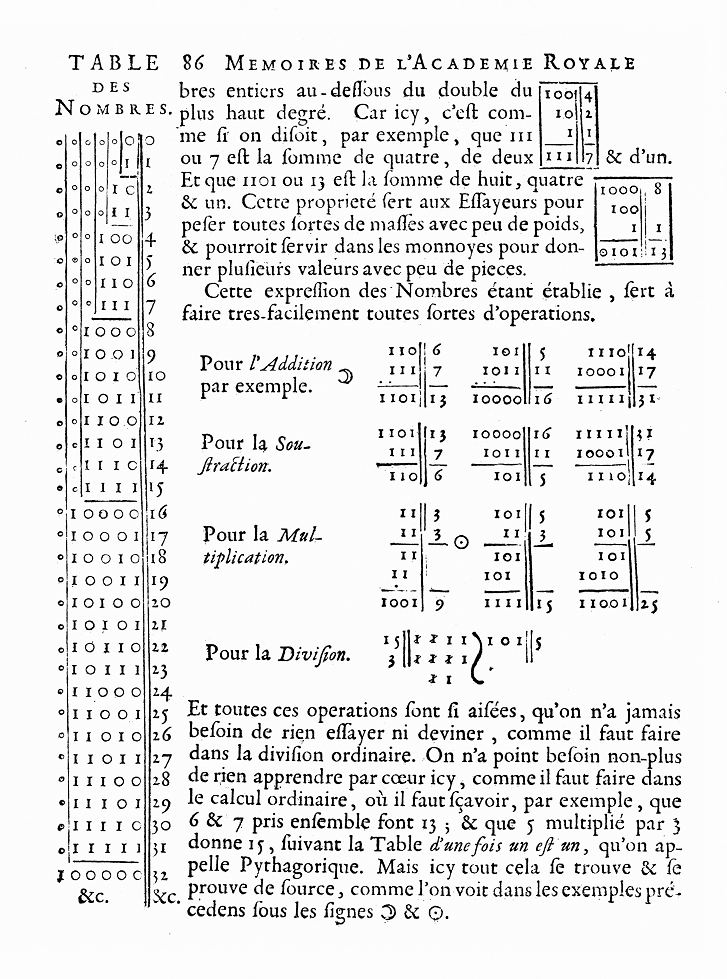

| Inicio | Fotos | Videos |
El código binario es el sistema de codificación usado para la representación de textos, o procesadores de instrucciones de computadora,
utilizando el sistema binario s(sistema numérico de dos dígitos, o bit: el "0" y el "1"). ...
El byte es un grupo de 8 bits, es decir en él tenemos 256 posibles estados binarios.
El antiguo matemático indio Pingala presentó la primera descripción que se conoce de un sistema de numeración binario en el siglo tercero antes de nuestra era,lo cual coincidió con su descubrimiento del concepto del número cero.
Una serie completa de 8 trigramas y 64 hexagramas (análogos a 3 bits ) y números binarios de 6 bits eran conocidos en la antigua China en el texto clásico del I Ching.
Series similares de combinaciones binarias también han sido utilizadas en sistemas de adivinación tradicionales africanos, como el Ifá, así como en la geomancia medieval occidental.
Un arreglo binario ordenado de los hexagramas del I Ching, representando la secuencia decimal de 0 a 63, y un método para generar el mismo fue desarrollado por el erudito y filósofo Chino Shao Yong en el siglo XI.
En 1605 Francis Bacon habló de un sistema por el cual las letras del alfabeto podrían reducirse a secuencias de dígitos binarios, las cuales podrían ser codificadas como variaciones apenas visibles en la fuente de cualquier texto arbitrario.
En 1670 Juan Caramuel publica su libro Mathesis Biceps; en las páginas XLV a XLVIII se da una descripción del sistema binario.
El sistema binario moderno fue documentado en su totalidad por Leibniz, en el siglo XVII, en su artículo "Explication de l'Arithmétique Binaire".
En él se mencionan los símbolos binarios usados por matemáticos chinos. Leibniz utilizó el 0 y el 1, al igual que el sistema de numeración binario actual.
En 1854, el matemático británico George Boole publicó un artículo que marcó un antes y un después, detallando un sistema de lógica que terminaría denominándose Álgebra de Boole. Dicho sistema desempeñaría un papel fundamental en el desarrollo del sistema binario actual, particularmente en el desarrollo de circuitos electrónicos.
